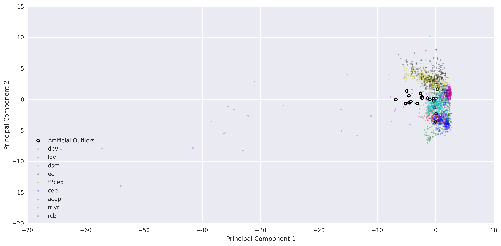
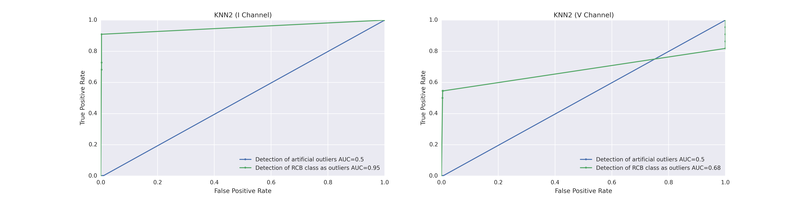
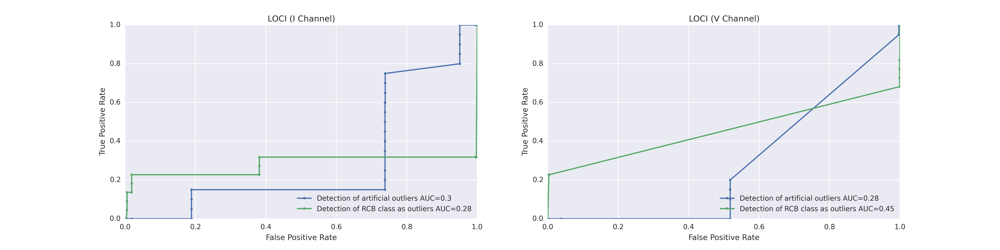
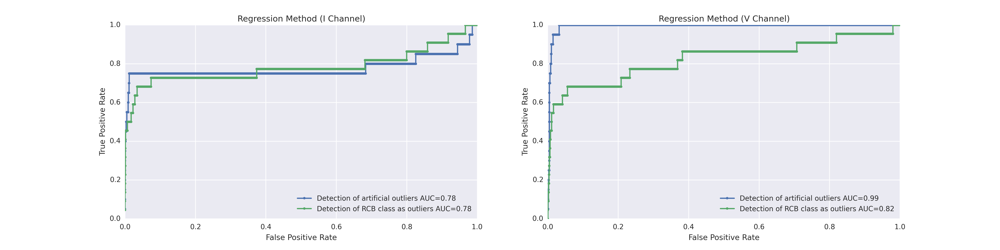

Previous Work & Methods
The Mixture of experts approach gets its strength from combining the output of separate methods (experts) having presumably different regimes of expertise.
In this project, six outlier detection methods (modified and/or unmodified from previous work) were used on either the infrared (I) or visual (V) channels of the light curves. This gave a total of twelve experts (six methods on two different channels). Here, we describe each outlier detection method and show its stand-alone performance.
We measure performance using two metrics. First, an artificial set of outliers were created (see below) and the method's ability to score them as outliers is measured. In the second method, we choose a class ('rcb') that is designated as outlier (based on initial data exploration). We then evaulate how well the method can score objects in this class as outliers.
Creation of Artificial Outliers
20 artificial outliers were created by first randomly choosing (with replacement) 20 light curves from the data set. That is, from our existing set of 1913 light curves, we bootstrap select 20. Thus, we did not have to specify any range from which to sample.
Within each feature, the 20 values were randomly shuffled among the data points. That is, imagine a 1913x57 matrix with our data, where each row is a light curve and each of the 57 columns represents the features. We iterate over the 57 columns and randomly shuffle the values within each column.
Then, $n$ standard deviations (of each feature) were randomly added to each data value, where $n$ is selected from a standard normal distribution centered at 4. Again with our matrix analogy, we calculate the standard deviation of each column's values. Then, to each value in the column we add $n$ times that standard deviation to it.
To visualize the 57-dimension data points more easily, principal component analysis (PCA) was done on the extracted time series features for each light curve. The first two principal components were used to make a 2D plot (Figure D1). PCA was used because visualizing a 57-dimensional space on a 2D image is very difficult. One could imagine plotting the data points on axes of each pair of features. However, this would create too many (57 choose 2) plots and therefore would be hard to easily grasp the shape of the data point cloud. PCA is a great way to draw a plane through the 57-dimensional data point cloud in such a way that the plane captures the most variation in the data. Projecting the data points on this place thus may allow visualization of outlier points more easily. We note that PCA was solely used as a visualization tool, and was not used for any of the mathematical mechanics in building the outlier detection models. Figure P1 shows the outliers plotted on the PCA plane.
{kind=link}
Figure P1. Artificial Outliers on the PCA plane, along with real data. 20 Artificial outliers (white dots, black outline) were created as described. The outliers do not seem too far removed from the main cluster of points on the PCA plane, indicating that measuring outlier detection performance with these artificial points will provide a good test of robustness of each method.
K Nearest Neighbors 1 (KNN1)
Modified from standard KNN approaches descrbied in outlier detection and classfication review literature such as Hodge and Austin. 2004. For every point, we compute a score which is the number of neighboring points that exist within a certain curoff distance chosen as a parameter. The distance in $n$-dimensions is merely the Euclidean norm but could be replaced by others.
When computing all neighbors for each point, this becomes a $O(n^2)$ problem. In implementation there are ways to simplify these computations using $kd$-trees and other algorithms but this is abstracted for us by usage of the functions provided for KNN in the scikitlearn library.
Using this method, there are a couple ways to evaluate outliers. The first would be to assume that the scores of KNN1 (the number of neighbors) are distributed normally such that we could filter based on a certain standard deviation count. Another option would be using the threshold parameter to find the $n$ most outliered points which can be labelled as outliers though this approach would work best by requiring a large understanding of the problem and an assumption on outlier likelihood.
KNN methods are geometric - computed with scores usually based on Euclidean norms. This translates to a density-based outlier detection meaning that two very similarly in density classes or an outlier in the middle of existing classes may return false positives without a careful tuning of the cutoff distance parameter. In higher dimensions, using paired dimensions and multiple pairings can help highlight differences that exist only in single dimensions that would have otherwise averaged out but this trades off computation (O(n^4) naively since there are now ${n \choose 2}$ pairwise dimensions to evaluate all $n$ points.)
{kind=link}
Figure P2. Visual representation . In a visualization to see how a KNN scoring method would work under this first version, we see how for a given point in question (the smiley face) it counts all neighbors within a cutoff distance (the solid or dotted circles). Although the visualization is in the supervised classification context, this cutoff radius and neighbor counting is analagous in the unsupervised outlier detection context.

Figure P3. ROC for the KNN1 method. The ROC curves show that this method works well espescially for the RCB outlier class. We see an fairly optimal curve and this validates our hypothesis that a simple geometric approach may lead to positive results. The artificial outlier class is not as easily detected. Area under the curve (AUC) is used as a metric to measure how optimal the model is.
K Nearest Neighbors 2 (KNN2)
As with the other KNN algorithm (KNN1) this version is also discussed in standard classification/outlier detection approaches as in Hodge and Austin. 2004. As opposed to using a Euclidean-norm cutoff distance in $n$-dimensions, the given parameter, $n$, is the number of neighbors to compute. Then, the Euclidean-norm score is computed to all of the $n$ nearest neighbors. The total distance (which should be monotonically increasing) will be the score for each point.
The computation order is similarly $O(n^2)$ which when computed with different data structures like $kd$-trees can be optimized. The process of labelling outliers is also as above - be it with the assumption of normally distributed scores with a standard deviation cutoff, or tuning the parameters to select a certain proportion of possible outliers. The weakness of KNN2 is the same as KNN1 in that KNN-based methods are geometric and density based, as described above. The problem is solved with pairwise analysis in higher dimensionality but this leads to a tradeoff with increasingly difficult computation.
{kind=link}
Figure P4. Visual Representation of KNN2. Although still in a classification context, we see how the point under study has distances computed to the nearest k neighbors (in this case 9) whose scores can be summed up to result in a final score for this node.
{kind=link}
Figure P5. ROC for the KNN2 method. This version independently performs fairly well for the rcb class, but completely fails for the artificial outliers.
Support Vector Machine & Joint Probability (SVM+JP)
This is a supervised learning method modified from Nun et al. 2014 and documented by supervised-learning standard algorithms. Briefly, a classifier is trained on data with known class labels. For each point, a membership probability vector is produced that lists the probability of its belonging to each class. Then a joint probability for the particular combination of membership probabilities is calculated. Nun et al. used a random forest classifier and a Bayesian Network to produce the joint probabilities. Outliers are then identified as the points that have low joint probabilities because class membership probability vectors similar to thiers were not been seen often enough in the training data.
Here, we modify the approach by using SVM (rbf kernel) for the classifier and a frequency table to determine the joint probabilities. In addition, an artificial class sampled uniformly from the sample space (defined as space between the minimum and the maximum of our data set in each feature) was used to train the classifier. The outlier class combined used in conjuction with the rbf kernel SVM allowed the method to create bounded regions for each class even with a very small number randomly sampled background. These modifications were found to improve outlier detection (especially excluded-group outliers). We can see a small-scale example on the classic "Iris" data set, below.
SVM was used instead of random forest because it can draws neater and tighter decision boundaries around clusters of points. This is necessary because outliers can be positioned far away from the initial training data points, yet be classified under a particular class solely due to its position radial to a class decision space. We found that the SVM classifier, with decision boundaries that encompass well the clusters of points for each particular class, improves detection of these kinds of outliers.
{kind=link}
Figure P6. RBF Kernel SVM on Iris Data One of the benefits to using SVM, as opposed to a random forest, is its ability to draw deciison boundaries that surround the entire cluster of points, when trained with a uniformly sampled artificial class (black).

Figure P7. ROC for the SVM+JP method. In the infrared channel (left), the SVM+JP method does very well in idenfitying the rcb outliers, and it performs moderately better than random guessing for the artificual outliers. In the visible channel (left), there is poorer performance for the rcb data.
Local Correlation Integral (LoCI)
Modified from Papadimitriou et al. 2003.
LOCI provides an automatic, data-dictated cutoff to determine whether a point is an outlier, with very few hyperparameters forcing users to pick arbitrary cut-offs. In addition, LOCI is quickly computable (compared to previous best methods) and approximate LOCI is practically linear in time. The algorithm involves the introduction of a multi-granularity deviation factor (MDEF), and then selecting a point as an outlier if its MDEF value deviates significantly (more than 3 $\sigma$ from local averages). Intuitively, the LOCI method finds points that deviate significantly from the density of points in its local neighborhood. This is formalized in the MDEF concept. Let the $r$-neighborhood of an object $p_i$ be the set of objects within distance $r$ of $p_i$. Then, intuitively, the MDEF at radius $r$ for a point $p_i$ is the relative deviation of its local neighborhood density from the average local neighborhood density in its $r$-neighborhood. So, an object with neighborhood density that matches the average local neighborhood density will have MDEF 0; outliers will have MDEFs far from 0. More formally, we have: $$MDEF(p_i, r, \alpha) = 1 - \frac{n(p_i, \alpha r)}{\hat{n}(p_i, \alpha, r)}$$ Here, $n(p_i, \alpha r)$ is the number of $\alpha r$-neighbors of $p_i$; that is, the number of points $p\in \mathbb{P}$ such that $d(p_i, p) \leq \alpha r$, including $p_i$ itself such that $n(p_i, \alpha r) > 0$ strictly. Also, $\hat{n}(p_i, \alpha, r)$ is the average of $n(p, \alpha r)$ over the set of $r$-neighbors of $p_i$; that is, $$\hat{n}(p_i, \alpha, r) = \frac{\sum_{p\in\mathcal{N}(p_i, r)} n(p, \alpha r)}{n(p_i, r)}$$ Also, define $$\sigma_{MDEF}(p_i, r, \alpha)= \frac{\sigma_{\hat{n}}(p_i, r, \alpha)}{\hat{n}(p_i, r, \alpha)}$$ where $$\sigma_{\hat{n}}(p_i, r, \alpha) = \sqrt{\frac{\sum_{p\in\mathcal{N}(p_i, r)}(n(p, \alpha r)-\hat{n}(p_i, r, \alpha))^2}{n(p_i, r)}}$$ Then, to determine if a point is an outlier, we use the following algorithm. For each $p_i\in\mathbb{P}$, compute $MDEF(p_i, r, \alpha)$ and $\sigma_{MDEF}(p_i, r, \alpha)$. If $MDEF > 3\sigma_{MDEF}$, flag $p_i$ as an outlier. If for any $r_{\textrm{min}} \leq r \leq r_{\textrm{max}}$ a point $p_i$ is flagged as an outlier via the aforementioned mechanism, then we consider that point to be an outlier. These cutoffs can be determined on a per-problem basis, but in general we use the following. We set $r_{\textrm{max}} \approx \alpha^{-1}R_{\mathbb{P}}$ and $r_{\textrm{min}}$ such that we have $\hat{n}_{\textrm{min}} = 20$ neighbors.
{kind=link}
Figure P8. ROC for the LOCI method. The LOCI method does not do very well in detecting artificial or rcb class outliers. The parameters for this expert have not been optimized.
Mixture Model (Eskin)
Modified from Eskin, 2000. The main goal behind the mixture model is to simplify a more complicated interaction to a combination of simpler distributions. Outlier classification is done by first assuming that all points belong in the normal group - and then computing a T-statistic to compute the probaiblity of observing this grouping. Then, for every orderm, $k$, (we only implemented order-1 where $k=1$), we iterate through the ${n \choose k}$ space to move $k$ points into the outlier class, which is usually assumed to be uniform. Then the scores of the new grouping is computed. If the change in score is past a given threshold, the $k$ points are marked as outliers in that order of space. In summary, for order-1, each point is moved from the normal to the outlier class and if the scores improve under this grouping beyond a certain threshold, the point is accepted as an ourlier. This does mean that optimizing for the theshold parameter can only be performed to target a certain number of outliers, again requiring additional knowledge. For computational efficiency, often the scoring is based on $\log$ scores.
The are three main assumptions that allow this Eskin approach to work the best. First, that the normal data can be fairly modelled by the given probability distribution. Second, that the anomalous elements are sufficiently distinct from the normal elements. And finally, that anomalies are few ($< 5\%$) of the entire data set or else the model will get distorted.
An analysis of the math of the method is described now. We let $D$ represent the generative distribution of the entire data, $M$ the majority distribution, $A$ the anomalous distribution, $\lambda$ the probability of an anomalous element generated from A and $(1-\lambda)$ the probability of a normal element generated from M.
We write the generalized distribtuion as:
$D = (1-\lambda)M + \lambda A$
The probability distribution generation with function $\Phi$:
$P_{M_t}(X) = \Phi_M(M_t)(X)$
$P_{A_t}(X) = \Phi_A(A_t)(X)$
The likelihood of the distribution:
$L_t(D) = \prod_{i=1}^{N}P_D(x_i) = \left( (1-\lambda)^{|M_t|} \prod_{x_i \in M_t}P_{M_t}(x_i) \right) \left( \lambda^{|A_t|} \prod_{x_j \in A_t}P_{A_t}(x_j) \right)$
The $\log$ of the above likelihood for computational speed:
$LL_i(D) = |M_t| \log (1-\lambda) + \sum _{x_i \in M_i} \log (P_{M_i}(x_i)) + |A_t| \log (\lambda) + \sum _{x_j \in A_t} \log (P_{A_t}(x_j))$
Treating $x_i$ as an anomaly:
$M_t = M_{t-1} \backslash {x_t}$
$A_t = A_{t-1} \cup {x_t}$
To determine outliers, we then use the score cutoff, $c$ to select, via:
$LL_t - LL_{t-1} < c$
The greatest weakness of the mixture model is its dependence on the underlying simple models that form the mixture. This means that the normal points need to follow a known distribution that can lead to a computed t-statistics (can be joint distributions, etc). When in doubt, a Gaussian model can be used but the results would be less accurate and precise
{kind=link}
Figure P9. Mixture Model Visual. We see a visual for modelling a more complex system as a joint "mixture" of various simpler models, in this case, the combination of various Gaussians with different parameters.

Figure P10. ROC for the Eskin method. We see that its performance is quite superior with the RCB class but more lacking with the artificial outliers. As discussed in the mechanics, a mixture model is only as good as the individual models that need to be mixed. Perhaps the Gaussian assumptions for the artifical outliers are not as good.
Hyperplane Regression (HyperReg)
Mentioned in outlier detection and classification literature, like Hodge and Austin. 2004, another paradigm for evaluatoin could be to use a multiple regression, which we will call hyperplane regression. This is an $n$-dimensional extension on the traditional 2D linear regression, where a regression line is computed with coefficient on the dependent variable and a constant term. When we scale up, we compute a coefficient for each feature and a constant term. To compute outliers, we take the norm of the coefficient vector and track changes when removing $k$ points. As with the Mixture Model above, the most computationally effective is just to remove one point at a time, so as not to require iteration through ${n \choose k}$ spaces for every $k$. The change in magnitude of our coefficient vector becomes a score, where scores that are over 4 standard deviations are marked as vectors.
Computationally, this can be done like a least-squares optimization. Again, the actual implementation is abstracted from us through uses of the statsmodel python library. This method will work best when there is linear model that represents the mechanics of the data. Actual data often have partially linear components, such as spending vs. income, or color vs. heat. This method would work well on these methods. Higher orders would lead to linear combinations of the features, which can also be okay, though if there are any non-linearly related components, this would throw off an $n$-dimensional model and may be also better tested pairwise at the cost of more computation.
{kind=link}
Figure P11. $n=3$ case of (hyper)plane regression. A visual for what higher order regressions look like. With 3 dimensions, the visual interpretation is straightforward - a plane within a 3D space. Higher orders are not as intuitively visual.
{kind=link}
Figure P12. ROC for the Hyperplane regression. This method performs clearly the best for the artificial outliers in the V channel. For everything else, it does not perform better than the other experts shown above.